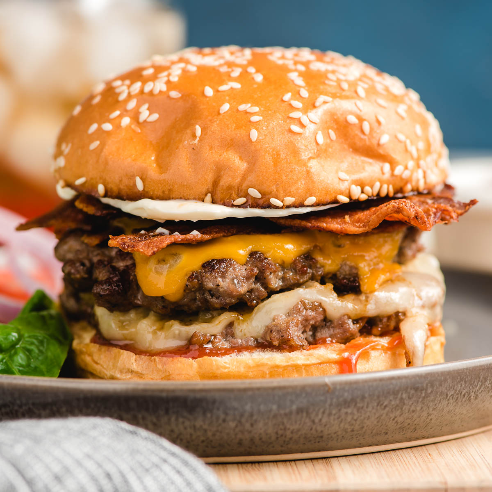

Cheese Burger Recipe

Description
Indulge in the savory goodness of a perfectly seasoned and juicy beef patty, smothered in melted cheese, all nestled between a soft sesame seed bun. Add the refreshing crunch of lettuce, tomato, and pickles for the ultimate burger experience that satisfies all your cravings. Bite after bite, you'll savor the rich flavors and textures that make this cheeseburger the ultimate comfort food.
Ingredients
- 1 pound ground beef (80% lean, 20% fat)
- 4 hamburger buns
- 4 slices of cheese (American, cheddar, or Swiss)
- 4 lettuce leaves
- 4 tomato slices
- 4 tablespoons ketchup
- 4 tablespoons mayonnaise
- Salt and pepper to taste
Steps
- Preheat a grill or grill pan over medium-high heat.
- Divide the ground beef into four equal portions and form them into patties about 1/2-inch thick. Season both sides of the patties with salt and pepper.
- Place the patties on the grill or grill pan and cook for 4-5 minutes per side, or until they reach your desired level of doneness.
- During the last minute of cooking, add a slice of cheese on top of each patty and let it melt.
- While the burgers are cooking, prepare the buns by toasting them on the grill or in a toaster.
- To assemble the burgers, spread 1 tablespoon of ketchup and 1 tablespoon of mayonnaise on each bottom bun.
- Add a lettuce leaf and a tomato slice on top of the sauce.
- Place the cooked patty with melted cheese on top of the vegetables.
- Add any optional toppings such as sliced onions, pickles, or bacon.
- Top with the other half of the bun and serve hot.